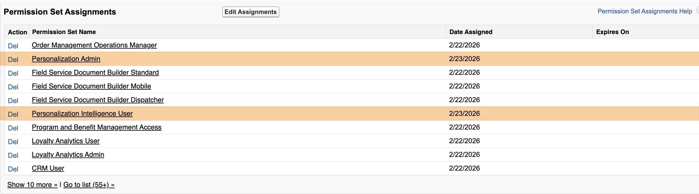
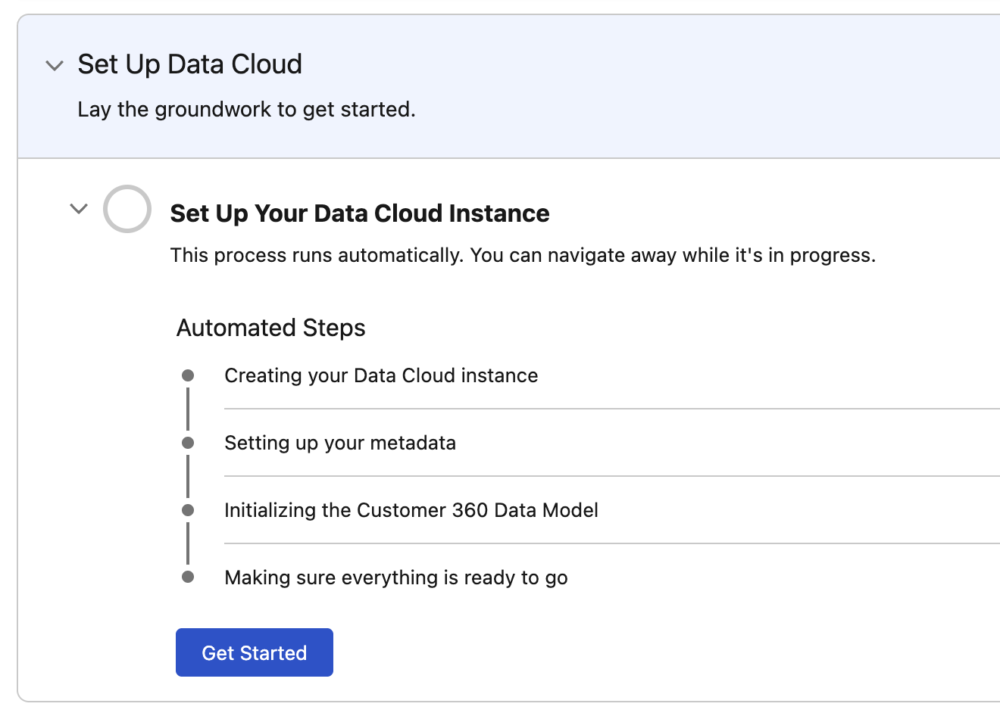
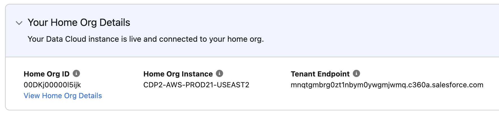
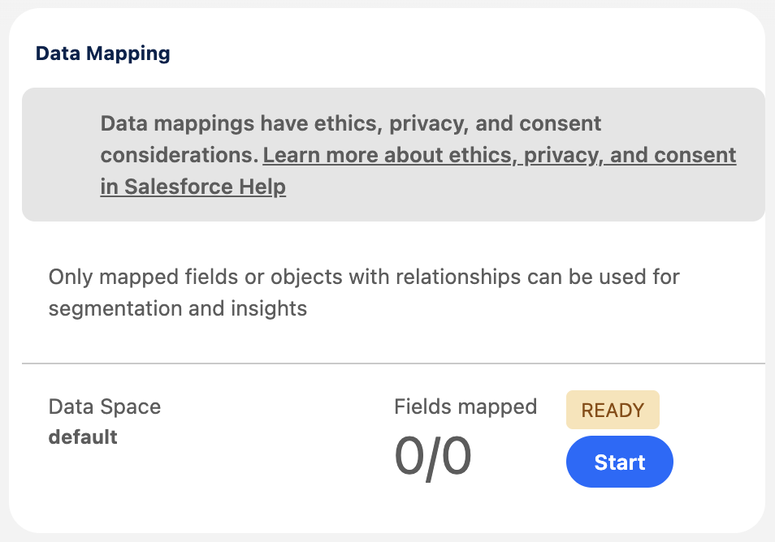
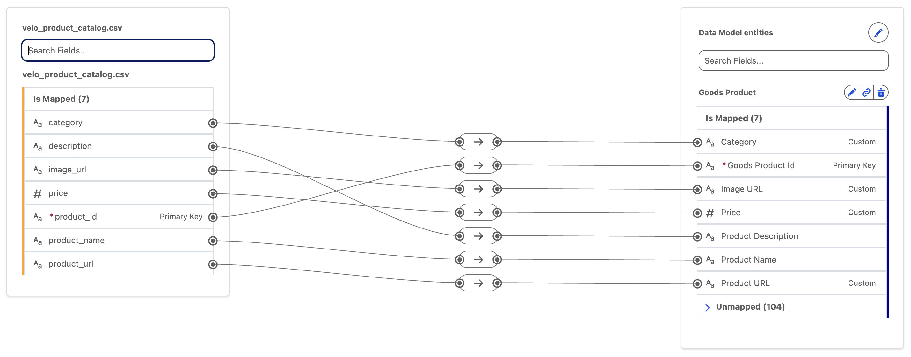
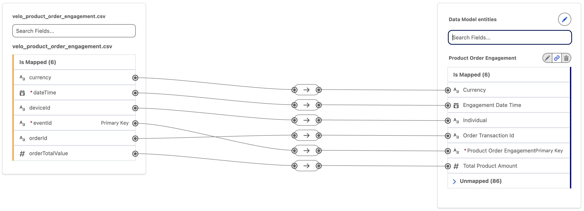
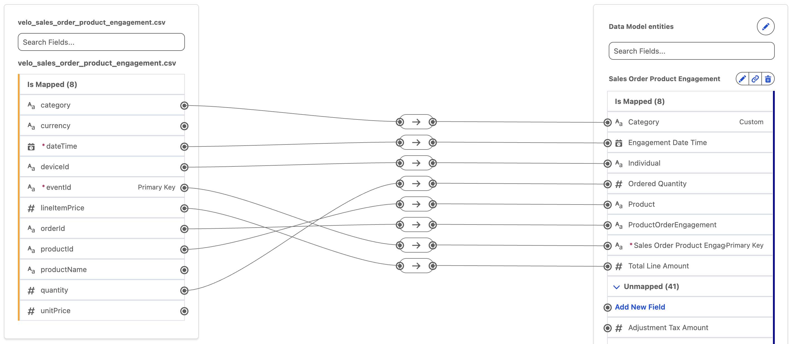
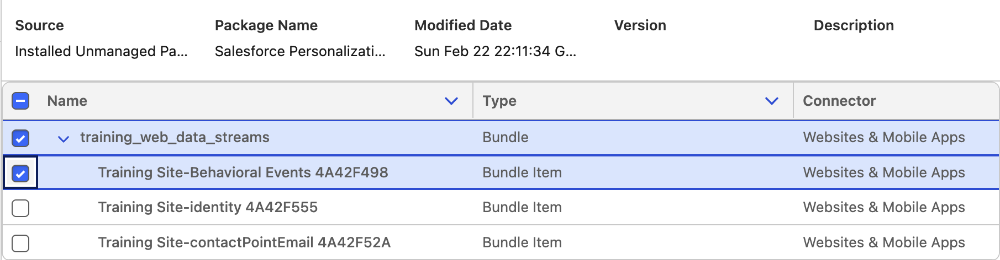

This workshop guides you to configuring a Simple Demo Org (SDO) with Data 360 and Salesforce Personalization.
Request a Simple Demo Org
Existing Simple Demo Org
If you’ve already configured a Simple Demo Org, you can skip this exercise and move directly to Setup User Permission Sets. If you don’t have access to an SDO or the partner community to request one, the workshops can also be completed in a sandbox.
- Login to Partner Community.
- Click the Learn tab.
- Click Start Learning in the Partner Learning Camp tile.
- Click the Demo Org tab.
- Select SDO from the Demo Type menu.
- Agree to the Master Subscription Agreement.
- Click Submit.
Note
It may take up to an hour to complete the SDO provisioning process. Wait until you recieve an activation email before proceeding.
Activate Your SDO
- Check your email inbox for an activation email.
- To avoid potential conflicts with an existing Salesforce org browser session, copy the URL provided in the email and paste the URL in an incognito browser window.
- Follow the instructions to set new password and security question.
- Click Change Password.
- Log in to the new SDO with your username provided in the activation email and new password.
Setup User Permission Sets
- Click on the icon from the top setup menu and click the first Setup menu item.
- In the quick find field, enter and select Users from the Users menu.
Users - Select Active Users from the View menu.
- Locate the row with your user account and click on your name.
- Click Permission Set Assignments from the top menu to locate the Permission Set Assignments section.
- Click Edit Assignments.
- From the Available Permission Sets list, select Personalization Admin then click Add
- From the Available Permission Sets list, select Personalization Intelligence User then click Add

- Click Save.
- If you are prompted that the selected permission sets include community settings, click OK.
Setup Data Cloud
Existing Simple Demo Org
If you’ve previously configured Data 360 in your Simple Demo Org, you can skip this exercise and move directly to the next step.
- Click the icon from the top setup menu and select Data Cloud Setup.
- Click Get Started from the Data Cloud Setup Home page.

- Once the setup process is complete, your Home Org details will appear on the Data Cloud Setup Home page.

Note
It may take up to an hour for the automated Data Cloud Instance setup process to complete. You will not be able to complete additional setup tasks until this process has completed.
Setup Personalization
Existing Simple Demo Org
If you’ve previously configured Personalization in your Simple Demo Org, you can skip this exercise and move directly to the Install Data Kit exercise.
- Click the icon from the top setup menu and select Personalization Setup.
- On the foundational setup tab, click Select Data Space in the Deploy Foundational Data section
- Select the default data space and then click deploy
Note
Installation of the foundational datakit should only take a couple minutes. You will receive an email when the datakit is deployed. No additional setup steps are required on the Personalization Setup page.
Install Data Kit
In this exercise you will install a data kit containing elements that you will use in future workshops.
- Copy the base URL of your SDO from the address bar in your browser, for example:
https://your-sdo.my.salesforce-setup.com - Open a new browser tab and paste the base URL into the address bar.
- Append the following path to the end of the URL: . Your final URL should look similar to this: https://your-sdo.my.salesforce-setup.com/packaging/installPackage.apexp?p0=04tWs000000hZ0v
/packaging/installPackage.apexp?p0=04tWs000000hZ0v - Press Enter on your keyboard to load the installation page.
- Select Install for All Users, then click Install.
- When you see the confirmation message indicating the installation is complete, click Done.
Data Kit Deployment
Once the data kit is installed, there is no need to deploy any of the data kit elements at this time. You will deploy parts of the data kit in later workshops.
Load Catalog & Purchase Data Files
To simulate product and transaction data, you will need to create data streams to load sample records into the relevant Data Lake Objects (DLOs) and map attributes to Data Model Objects (DMOs). You will use this mapping to build recommenders and return personalized results on your training website in a later workshop.
Product Catalog Data Stream
- Download the following file to your local computer: velo_product_catalog.csv.
- Search for Data Cloud from App Launcher
. - Select Data Cloud.
- Select the Data Streams tab.
- Click New.
- Select the File Upload tile.
- Click Next.
- Select
Upload Files. - Select the velo_product_catalog.csv file you previously downloaded.
- In the Properties tab, set Category to Other and Primary Key as product_id.
- Click Next.
- Click Deploy.
- Click Start in the Data Mapping card.

- Click Select Objects.
- Search for the object in the Standard Data Model tab, then click the
Goods Producticon to add it as an object mapping. - Click Done.
- Select product_id in the DLO left panel.
- Expand the Unmapped menu and select Goods Product Id from the Goods Product DMO.
- Click Save.
- Expand the Unmapped menu and click Add New Field.
- Enter in the Field Label menu and select 'Text' from the Data Type menu.
Category - Click Save.
- Repeat steps 20–22 to create three additional custom attributes as per the table below.
| Attribute Name | Type |
|---|---|
| Image URL | Text |
| Price | Number |
| Product URL | Text |
- Create attribute mappings as per the table and screenshot below.
Searching DMO fields
You can quickly locate a DMO field by typing a value in Search fields in the Data Model entities panel.
| DMO Attribute | Goods Product Attribute |
|---|---|
| category | Category |
| description | Product Description |
| image_url | Image URL |
| price | Price |
| product_id | Goods Product Id |
| product_name | Product Name |
| product_url | Product URL |

- Click Save & Close.
Product Order Engagement Data Stream
- Download the following file to your local computer: velo_product_order_engagement.csv.
- Select the Data Streams tab.
- Click New.
- Select the File Upload tile.
- Click Next.
- Select
Upload Files. - Select the velo_product_order_engagement.csv file you previously downloaded.
- In the Properties tab, set the Category field to Engagement.
- Set the Event Time field to dateTime.
- Set the Primary Key field to eventId.
- Click Next.
- Click Deploy.
- Click Start in the Data Mapping card.
- Click Select Objects.
- Search for the object in the Standard Data Model tab, then click the
Product Order Engagementicon to add it as an object mapping. - Click Done.
- Expand the Unmapped menu from the Product Order Engagement DMO.
- Create attribute mappings as per the table and screenshot below.
| DMO Attribute | Product Order Engagement Attribute |
|---|---|
| currency | Currency |
| dateTime | Engagement Date Time |
| deviceId | Individual |
| eventId | Product Order Engagement Id |
| orderId | Order Transaction Id |
| orderTotalValue | Total Product Amount |

- Click Save & Close.
Sales Order Product Engagement Data Stream
- Download the following file to your local computer: velo_sales_order_product_engagement.csv.
- Select the Data Streams tab.
- Click New.
- Select the File Upload tile.
- Click Next.
- Select
Upload Files. - Select the velo_sales_order_product_engagement.csv file you previously downloaded.
- In the Properties tab, set the Category field to Engagement.
- Set the Event Time field to dateTime.
- Set the Primary Key field to eventId.
- Click Next.
- Click Deploy.
- Click Start in the Data Mapping card.
- Click Select Objects.
- Search for the object in the Standard Data Model tab, then click the
Sales Order Product Engagementicon to add it as an object mapping. - Click Done.
- Select eventId in the DLO left panel.
- Expand the Unmapped menu and select Sales Order Product Engagement Id from the Sales Order Product Engagement DMO.
- Select dateTime in the DLO left panel.
- Select Engagement Date Time from the Sales Order Product Engagement DMO.
- Click Save.
- Expand the Unmapped menu and click Add New Field.
- Enter in the Field Label menu and select 'Text' from the Data Type menu.
Category - Click Save.
- Create attribute mappings as per the table and screenshot below.
| DMO Attribute | Sales Order Product Engagement Attribute |
|---|---|
| category | Category |
| currency | not mapped |
| dateTime | Engagement Date Time |
| deviceId | Individual |
| eventId | Sales Order Product Engagement Id |
| lineItemPrice | Total Line Amount |
| orderId | ProductOrderEngagement |
| productId | Product |
| productName | not mapped |
| quantity | Ordered Quantity |
| unitPrice | not mapped |

- Click Save & Close.
Deploy Website Connector Data Streams
In this exercise, you will use a data kit to deploy the data streams required for subsequent workshops. The data kit also includes the necessary object mappings for these data streams.
- Select the Data Streams tab.
- Click New.
- Select the Installed Data Kits & Packages tile in the Other Sources section.
- Click Next, then wait while the data kits are retrieved.
- Select the Salesforce Personalization Training Data Kit from the Data Kits list.
- Select the first data stream whose name begins with Training Site-Behavioral Events.

- Click Next.
- Click New Connector.
- Enter in the Connector Name field.
Training Site - Select Website from the Connector Type field.
- Click Save.
- Click Next to review your data stream fields.
- Click Next, then click Deploy.
Review Object Mappings
To review how web schema objects map to DMOs, open the data stream and view its object mappings. With the exception of the All Event Data schema object, each web schema object maps 1:1 to a corresponding DMO. This means each schema object record creates a single matching DMO record in Data 360.
- Repeat steps 2–7 for the Training Site-identity data stream in the data kit.
- Select Website from the Connector Type menu.
- Select Training Site from the Connector Name menu to select the connector you created previously.
- Click Next to review your data stream fields.
- Click Next, then click Deploy.
- Repeat steps 2–7 for the Training Site-contactPointEmail data stream in the data kit.
- Repeat steps 13–16 to configure and deploy the data stream.
Deployment Sequence
Deploy one data stream at a time from the data kit. Sequential deployment is required to avoid potential conflicts with other dependencies.
Add Object Relationships
A Data 360 Data Model Object (DMO) can have either standard or custom relationships with other DMOs. The Data 360 data model includes several predefined standard relationships, and you can also define custom relationships as needed.
In this exercise, you will create custom relationships between the DMOs mapped in the data streams that you created earlier.
Sales Order Product Engagement Object Relationships
- Select the Data Model tab.
- Locate or search for and click on the object label.
Sales Order Product Engagement - Click on the Relationships tab.
- Click Edit.
- Click
New Relationship. - Select the following fields:
| Field | Value |
|---|---|
| Field | Product |
| Cardinality | N:1 |
| Related Object | [Data Cloud] Goods Product |
| Related Field | Goods Product Id |
- Click Save.
Shopping Cart Product Engagement Object Relationships
- Select the Data Model tab.
- Locate or search for and click on the object label.
Shopping Cart Product Engagement - Click on the Relationships tab.
- Click Edit.
- Click
New Relationship. - Select the following fields:
| Field | Value |
|---|---|
| Field | Product |
| Cardinality | N:1 |
| Related Object | [Data Cloud] Goods Product |
| Related Field | Goods Product Id |
- Click Save.
Install the Salesforce Personalization Sitemap Builder Chrome Extension
In this exercise, you will install the Salesforce Personalization Sitemap Builder Chrome extension. You will use this tool in a later workshop to complete a series of hands-on sitemap construction activities.
- Open Google Chrome.
- Open the Sitemap Builder page in the Chrome Web Store.
- Click Add to Chrome.
- When prompted, click Add extension to confirm the installation.
- Once installed, verify the extension appears in your browser toolbar (you may need to pin it from the Extensions menu).
Download Postman
In this exercise, you will install Postman, which you will use in later workshops to simulate personalization API requests.
- Open a web browser and navigate to postman.com/downloads
- Download the Postman application for your operating system (Mac, Windows, or Linux).
- Run the installer and follow the on-screen instructions to complete the installation.
- Launch Postman.
- Sign in with your existing Postman account, or create a free account if you don’t already have one.